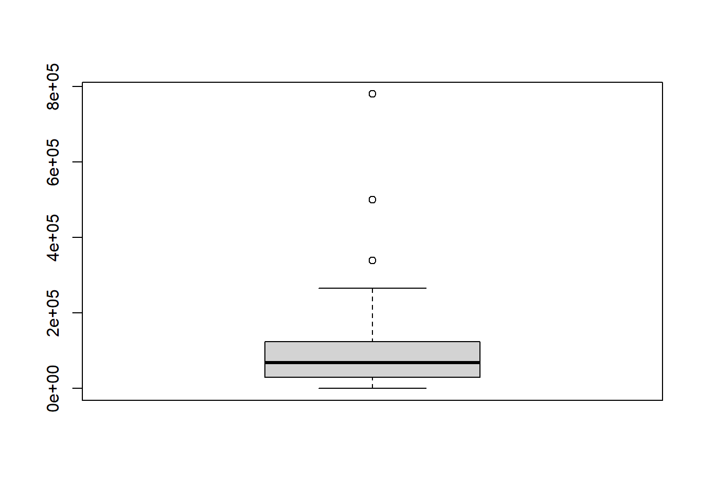
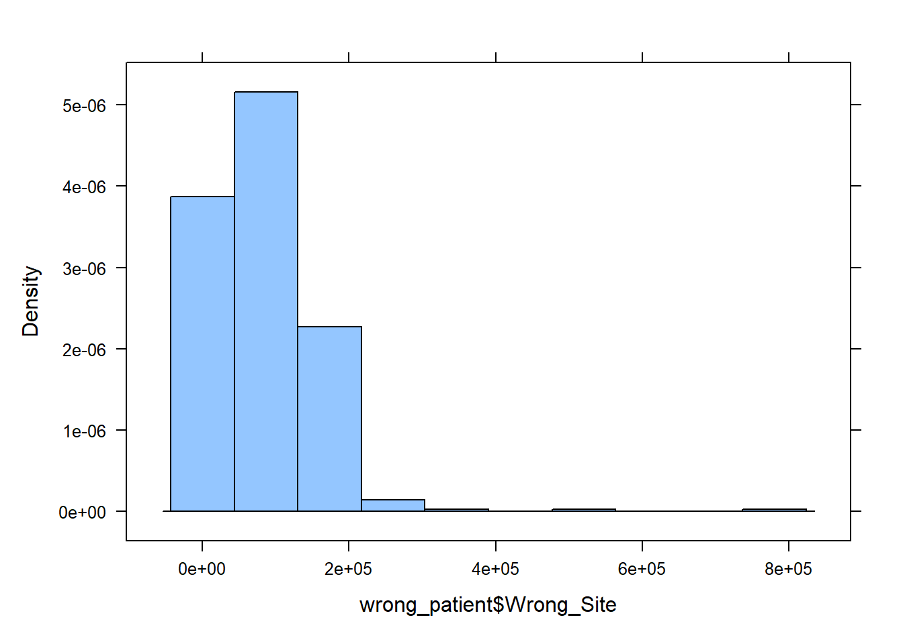

library(rio)
library(mosaic)
library(tidyverse)
library(car)
wrong_patient <- import("https://github.com/byuistats/Math221D_Course/raw/main/Data/WrongSiteWrongPatient.xlsx")Graphical Quantitative Data Summaries
Introduction
In this section, you will learn the basic visualizations for quantitative variables. After completion, you should be able to:
- Interpret data presented in a histogram
- Identify left-skewed, right-skewed and symmetric distributions from histograms
- Interpret a boxplot
- Create histograms and boxplots in R
Reading Data into R
We will use R to calculate measures of center and spread using data collected about costs incurred by hospitals due to certain lawsuits. The lawsuits in question were about surgeries performed on the wrong patient, or on the right patient but the wrong part of the patient’s body (the wrong site).
Load the libraries and the data into R:
Graphical Summaries
The 2 main visualizations for quantitative variables are histograms and boxplots. When looking at a single variable, histograms are preferred, but we will introduce the boxplot here and how to interpret it.
Histograms
Histograms are commonly used to visualize a single, quantitative variable. It provides a way to visualize how data points are spread out.
The key components of a histogram are:
Bars: Histograms consist of adjacent bars, where each bar represents a range of values, known as a “bin.” The height of each bar indicates the frequency (or count) of data points that fall within that bin.
Bins: The x-axis is divided into equal intervals (bins). Each bin captures a specific range of values. For example, if you’re plotting test scores, a bin might cover scores at 5-point intervals.
Frequency: The y-axis shows the frequency or number of observations that fall within each bin. This allows you to see how many data points lie in each bin.
How to Interpret a Histogram:
Shape of Distribution: The overall shape of the histogram can indicate the distribution of the data.
Central Tendency: You can often observe where most of the data points cluster, giving an idea of the central tendency (mean, median).
Spread: You can see how spread out the data is, which provides insights into variability.
Outliers: Histograms can help identify any potential outliers by showing bars with significantly lower frequencies compared to others.
Describing the “Shape” of a Distribution
We will describe the shape of the distribution of a data set using the following basic categories:
- Symmetric (bell-shaped)
- Right skewed
- Left skewed
A distribution is symmetric if both the left and right side of the distribution appear to be roughly a mirror image of each other. A special symmetric distribution is a bell-shaped distribution. When data follow a bell-shaped distribution, the histogram looks like a bell. Bell-shaped distributions play an important role in Statistics and will play a role in most of the future lessons.
A distribution is right-skewed if a histogram of the distribution shows a long right tail. This can occur if there are some very large outliers on the right-hand side of the distribution. A distribution is left-skewed if a histogram shows that it has a long tail to the left.
| Right-skewed | Symmetric & Bell-shaped | Left-skewed |
|---|---|---|

|

|

|
|
Mean: $10.45 Median: $9.04 Mean is to the right of the median. |
Mean: 71.1 inches Median: 71 inches Mean and median are roughly equal. |
Mean: 3.42 Median: 3.45 Mean is to the left of the median. |
If a distribution has only one peak, it is said to be unimodal. The three distributions illustrated above are all unimodal distributions. Some people might argue that there are several peaks in the GPA data, so it should not be considered unimodal. Even though there are jagged bumps in the histogram, it is important to visualize the overall shape in the data. When interpreting a histogram, it can be helpful to blur your eyes and imagine the overall shape after smoothing out the bumps. If the overall trend indicates that there is more than one bump, then we do not consider the distribution to be unimodal. We will usually only work with unimodal data sets in this course.
Some distributions have no distinct peak, others have more than one peak. When there is no distinct peak, and the histogram shows a relatively flat shape, we might say the data follow a uniform distribution. If there are two distinct peaks, a distribution is called bimodal. If there are more than two peaks, we refer to the distribution as multimodal.

Histograms in R
To make a histogram in R, you can use the histogram() function. This takes as an input a single quantitative variable:
histogram(wrong_patient$Wrong_Patient)
QUESTION: What is the basic shape of the wrong patient procedure lawsuits?
ANSWER:
Boxplots
A boxplot is a graphical representation of the five-number summary. We will illustrate the process of making a boxplot using the wrong-site data.
Follow the steps below to learn how a boxplot relates to the five-number summary. Learning what each part of the boxplot represents will enable you to interpret the plot correctly.
Step 01: To draw a boxplot, start with a number line.

Step 02: Draw a vertical line segment above each of the quartiles.

Step 03: Connect the tops and bottoms of the line segments, making a box.

Step 04: Make a smaller mark above the values corresponding to the minimum and the maximum.

Step 05: Draw a line from the left side of the box to the minimum, and draw another line from the right side of the box the maximum.

Step 06: These last two lines look like whiskers, so this is sometimes called a box-and-whisker plot.

R Instructions
To create a boxplot in R, do the following
- Use the
boxplot()function to get a boxplot of the Wrong Site payouts:
boxplot(wrong_patient$Wrong_Site)
# We can make it a little nicer by adding labels to the x and y axes and adding a title as follows:
boxplot(wrong_patient$Wrong_Site, xlab="Wrong Site", ylab="Cost in $", main="Boxplot of Costs of Operating on the Wrong Site")
Answer the following questions:
Create a histogram of the wrong-patient lawsuit data. What is the shape of the wrong-patient data?
- Skewed left
- Symmetric
- Skewed right
- Multi-modal
- Uniform
Solution
To create the histogram, use the histogram() function on the data:
histogram(wrong_patient$Wrong_Site)
From the histogram we clearly see most values bunched near the left and gradually fewer values as we move to the right along the number line, so the correct answer is ‘c. Skewed right’.
Histograms are preferred to boxplots when visualizing one set of data. But side-by-side boxplots are a powerful way to compare data from different samples visually. For example, we may be interested in comparing the results of wrong-site lawsuits and wrong-patient lawsuits.
In the plot we can quickly see that a wrong-patient lawsuit resulted in the largest cost to the hospital, more than $1.2 million. However, in general, wrong-patient lawsuits tend to result in a lower cost to the hospital than wrong-site lawsuits.
R Instructions
To create side-by-side boxplots in R, do the following
- Using the previously loaded data,
wrong_patient, use theboxplot()function with the column names separated by a comma, and add labels:
boxplot(wrong_patient$Wrong_Patient, wrong_patient$Wrong_Site, names=c("Wrong Patient", "Wrong Site"))
We will learn how to improve charts even more a little later.
Summary
Remember…
A percentile is calculated in R using
quantile(data, 0.#)where the0.#is the percentile written as a decimal number. So the 20th percentile would be written as 0.2.A percentile is a number such that a specified percentage of the data are at or below this number. For example, if say 80% of college students were shorter than (or equal to) 70 inches tall in height, then the 80th percentile of heights of college students would be 70 inches.
Standard deviation is calculated in R for a sample of data using
sd(data).The standard deviation is a number that describes how spread out the data typically are from the mean of that data. A larger standard deviation means the data are more spread out from their mean than data with a smaller standard deviation. The standard deviation is never negative. A standard deviation of zero implies all values in the data set are exactly the same.
To compute any of the five-number summary values in R, use the R function
favstats(data)which also includes the mean and standard deviation.The five-number summary consists of (1) the minimum value in the data, (2) the first quartile (25th percentile) of the data, (3) the median of the data (50th percentile), (4) the third quartile (75th percentile) of the data, and (5) the maximum value occurring in the data.
To create a boxplot in R, use the
boxplot(data)or for multiple columnsboxplot(data1, data2, names=c("Name of Column 1", "Name of Column 2)).Boxplots are a visualization of the five-number summary of a data set.